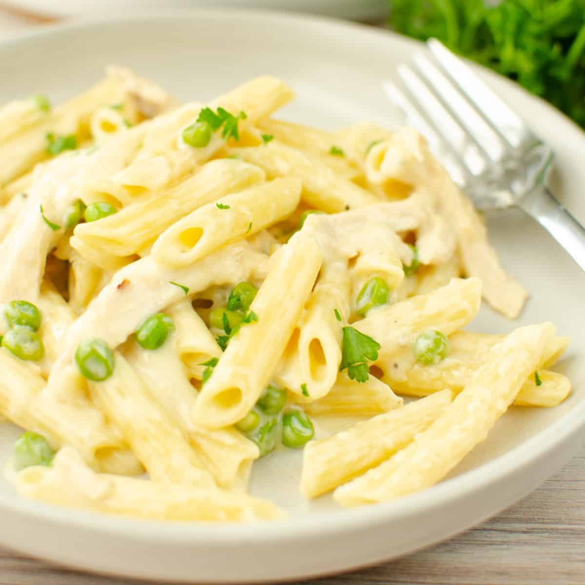

Chicken Alfredo

What You'll Need
This recipe shows you how to take plain, bland, store-made sauce and make it more than restaurant-worthy.
- 2 Pounds chicken breasts, cut into chunks
- salt and ground pepper
- 2 packages of thin spaghetti
- italian seasoning, garlic powder, onion powder
- 1 1/2 cup of shredded parmesan
- 2 cups chopped broccoli (optional)
- 4 (15 ounce) jars Alfredo sauce
Instructions
- Season chicken with salt and pepper. Heat a large skillet over medium-high heat. Add chicken and cook until no longer pink in the centers and juices run clear, 7 to 10 minutes.
- Bring a large pot of lightly salted water to a boil. Cook thin spaghetti in the boiling water, stirring occasionally, until tender yet firm to the bite, 8 to 10 minutes.
- Meanwhile, add Alfredo sauce to the chicken along with Italian seasoning, garlic powder, onion, basil, salt, black pepper, onion powder, and cayenne. Bring to a slight boil; stir in Parmesan cheese. Cook mixture until cheese is melted and you are able to lift a spoon out of the sauce without cheese hanging onto it, 3 to 5 minutes.
- Place a steamer insert into a saucepan and fill with water to just below the bottom of the steamer. Bring water to a boil. Add broccoli, cover, and steam until tender, 2 to 6 minutes. Add broccoli to sauce.
- Drain cooked pasta. Scoop into individual serving bowls and pour sauce on top.